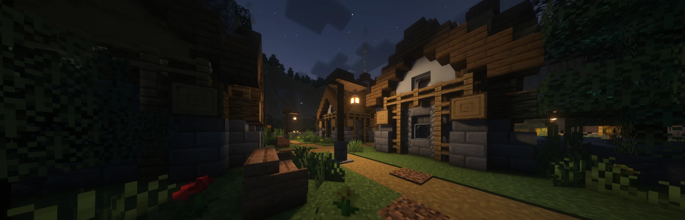

Köy takımı
Kurtlar ve bağımsız oyuncular elendiğinde köy takımı kazanır. Yanlış bir oylama, bilgi ve koruma rollerini kendi elinle kaybetmene neden olabilir.
Rol dağıtımı, gece eylemleri, gündüz oylaması ve takımların kazanma koşulları.

Maç; rol dağıtımı, gece eylemleri ve gündüz oylamasıyla ilerler.
Maç başında roller rastgele dağıtılır ve oyuncular evlerine yerleşir. Takımını, yeteneğini ve varsa sınırlı kullanım hakkını öğren; rolünü herkese açıklamak zorunda değilsin.
Evine dön ve sıran geldiğinde rolünün yeteneğini kullan. Kimi roller korur, kimi bilgi toplar, kimi avlanır. Gece herkes serbestçe dolaşamaz; sana verilen yönlendirmeleri takip et.
Sabah gece yaşananlar ortaya çıkar. Bildiklerini paylaş, iddiaları karşılaştır ve oylamada şüphelendiğin oyuncuyu seç. Her elemeden sonra hayatta kalan takımlara göre oyun devam eder veya sonuçlanır.
Kurtlar ve bağımsız oyuncular elendiğinde köy takımı kazanır. Yanlış bir oylama, bilgi ve koruma rollerini kendi elinle kaybetmene neden olabilir.
Hayatta kalan kurtların sayısı, diğer bütün yaşayan oyuncuların toplamına eşit veya daha fazla olduğunda kurt takımı kazanır.
Kundakçı herkes elendikten sonra tek başına kalırsa kazanır. Soytarının yer aldığı özel maçlarda ise oylamayla idam edilmesi oyunu onun lehine bitirir.